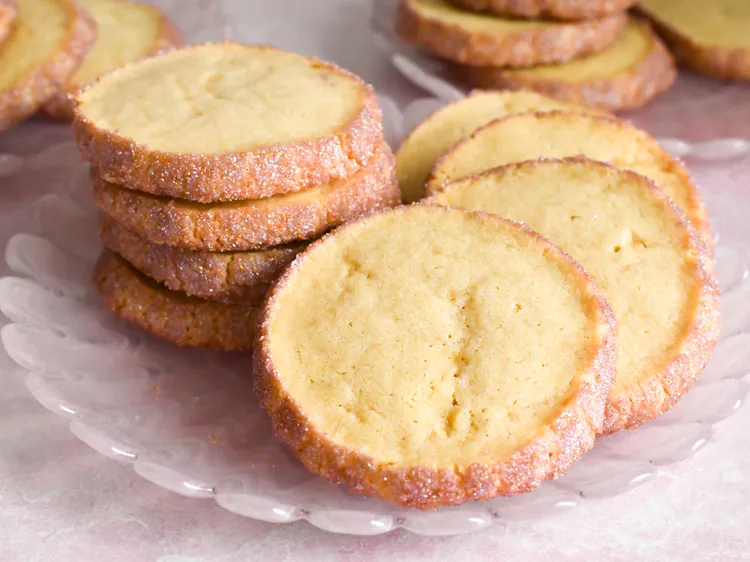

Sparkling Shortbread Cookies

Great dessert for those that love shiny things!
These sparkling shortbread cookies take on a little extra glitz and glam after rolling in sparkling sanding sugar. Use any color, or mix of colors, to coat the buttery cookies.
Ingredients
- 1 cup unsalted butter
- 1/2 cup white sugar
- 1/4 cup firmly packed light brown sugar
- 1/2 teaspoon salt
- 1/4 teaspoon ground nutmeg
- 1 large egg yolk
- 2 teaspoons vanilla extract
- 1/4 teaspoon almond extract
- 2 cups all-purpose flour
- 2 tablespoons cornstarch
- 1 large egg white
- 1 teaspoon water
- 1/2 cup assorted colors sanding sugar, or as needed
Step-by-Step
-
In a large bowl, beat together butter, white sugar, brown sugar, salt, and nutmeg with an electric mixer until light and fluffy, 2 to 3 minutes. Add in egg yolk, vanilla, and almond extract and beat until combined. Add in 1 cup flour and cornstarch and mix until just incorporated. Mix in remaining 1 cup flour until just incorporated.
-
Use your hands to press dough firmly together into a ball. Then place the ball of dough onto a piece of parchment paper and roll it into a log about 11 inches long and 1 1/2 inches wide (if dough is sticky, lightly flour your hands to make rolling easier). Wrap the dough log in the parchment paper and twist the ends tightly to seal. Refrigerate dough until firm, about 1 hour.
-
In a small bowl, whisk egg white and water together until combined.
-
Lay out a long piece of plastic wrap flat onto the counter. Pour sanding sugar in a line down the center of the plastic wrap.
-
Remove dough log from the refrigerator. Brush a thin layer of egg white mixture over the outside of the dough log. Carefully lay the log onto the sanding sugar and roll to coat. Scoop up any extra sanding sugar and sprinkle it over any bare spots, making sure to press the sugar gently but firmly into the dough to adhere. Once dough is completely coated, wrap it in the plastic wrap and chill in the refrigerator for 30 minutes.
- Preheat the oven to 350 degrees F (180 degrees C). Line baking sheets with parchment paper.
-
Remove dough from the refrigerator and carefully remove plastic wrap. Cut dough into slightly less than 1/2-inch-thick rounds, and place them 1 inch apart on the prepared baking sheets.
-
Bake cookies in the preheated oven, 1 pan at a time, until they look set, 15 to 20 minutes. Allow to cool on the pan for 5 minutes before removing to a wire rack to cool completely. Keep extras stored in an air-tight container.
Home